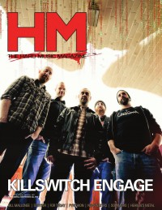

HM, Apr 2013, #165
| Cover |
|---|
|  |
 Online Exclusively Online Exclusively |
| Writers in this Issue |
| Crabb II, Kemper B. Farrell, Paul Francis, Matt Johnson, Chad Newcomb, Brian Quincy Shameless, Rob Stagg, Barry Stagg, David Van Pelt, Doug Wycoff, Collette |
Killswitch Engage
Cover Feature:- "Version 3.0" by Doug Van Pelt
- New Waters by Rob Shameless
- Pyrithion by Collette Wycoff
- Killswitch Engage - Disarm the Descent by Rob Shameless
- The Almost - Fear Inside Our Bones by Doug Van Pelt
- Ace Augustine - The Sick and Suffering by Barry Stagg
- Bill Mallonee - Amber Waves by Brian Quincy Newcomb
- Valaska - Natural Habitat by David Stagg
The Christian and Art: "Concerning "Jesus Is My Girlfriend" Songs: Observations on the Imbalances of Today's Worship (Part the Tenth)" by Kemper B. Crabb II
Guest Editorial: "One Thousand Risks" by Chad Johnson
Tales From The Conservative Underground:
- "Vol. 15 - The Death of Tooth & Nail" by Matt FrancisTooth & Nail Records
This issue of HM came bundled with Heaven's Metal #98.
Relevant Links
Official web site of HMOnline back issue publication
This issue is available exclusively online.
You may be able to find HM in a library near you: Worldcat

© 2011 CMnexus. Last updated December 2020. Contact: editor -AT- cmnexus -DØT- org About